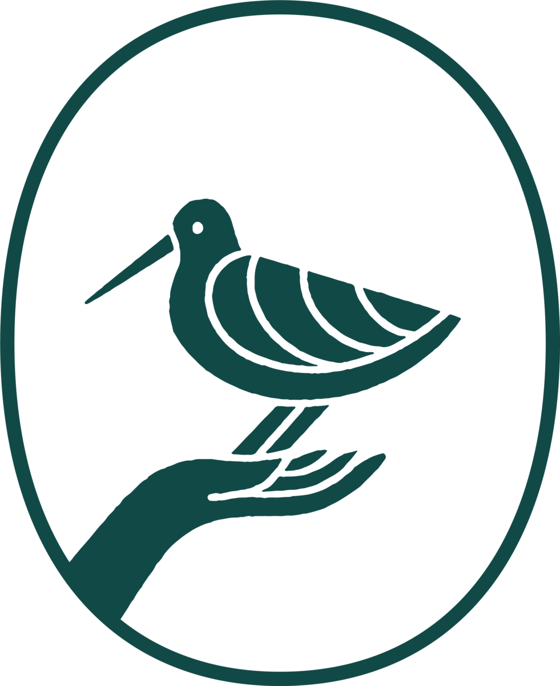

KOM’BAR

naʻau × Ivycoast · 2026
発酵が生み出す美しさ。
A cold-process bar soap made with naʻau’s kombucha and the SCOBY that brews it.
ORGANIC KOMBUCHA
COLD PROCESSED BAR SOAP


KOM’BAR
naʻau × Ivycoast · 2026
発酵が生み出す美しさ。
A cold-process bar soap made with naʻau’s kombucha and the SCOBY that brews it.
ORGANIC KOMBUCHA
COLD PROCESSED BAR SOAP
Ivycoast brings Australian botanicals into Japanese homes for daily rituals. naʻau brews kombucha in Nagoya to help people listen to their bodies. Together we made a soap.
This page is for both teams: what we plan to make, the words we will use, and how the collaboration sits with each naʻau direction.
Where Ivycoast and naʻau meet: small daily acts of care, and the patience of things that take weeks to make.


Australian botanicals, brought into Japanese homes for daily rituals.
Small-batch kombucha, brewed in Nagoya by kimy.
Organic kombucha cold-processed bar soap, made with naʻau’s kombucha and SCOBY.


What each side makes, and where it appears. Proposals are marked.
KOM’BAR
ORGANIC KOMBUCHA
COLD PROCESSED BAR SOAP
KOM’BAR
naʻau × Ivycoast
¥［ ］（税込）
丁寧に仕込んだコンブチャの発酵液と、SCOBYの粉末を。
カートに入れる
ivycoast ・ naʻau 同じ写真と文章で
KOM’BAR
01
発酵
Kombucha, brewed by naʻau
02
SCOBY
Dried and milled to a scrub
03
石鹸
Cured for weeks by Ivycoast
発酵が
生み出す美しさ。
KOM’BAR
ORGANIC KOMBUCHA SOAP
ありがとうございます。
Kombucha brewed in Nagoya, cured into soap by hand. We hope it brings a slow minute to your day.

KOM’BAR
ORGANIC KOMBUCHA
COLD PROCESSED BAR SOAP
KOM’BAR
ORGANIC KOMBUCHA SOAP
How both sites talk about the collaboration, in Japanese and English.
Japanese first, English as a quiet second line. Sensory and process-led: what it is, how it’s made, how it feels to use. Calm like Ivycoast; warm and personal like naʻau. No exclamation marks, no superlatives.
発酵が生み出す美しさ。
The beauty that fermentation makes.
育てる時間。手をかけること。自然から学ぶこと。
Time to grow. Care by hand. Learning from nature.
丁寧に仕込んだコンブチャの発酵液と、SCOBYの粉末を。
Carefully brewed kombucha, and the SCOBY that made it.
Soap is a cosmetic, so claims stay inside the approved cosmetic effects.
Final copy to be checked against 薬機法 by the party holding the cosmetics licence.
Whichever direction naʻau chooses, the collaboration keeps its own peach. Here is how it sits beside each one.
KOM’BAR
ORGANIC KOMBUCHA
COLD PROCESSED BAR SOAP
×KOM’BAR
ORGANIC KOMBUCHA
COLD PROCESSED BAR SOAP
 ×
×KOM’BAR
ORGANIC KOMBUCHA
COLD PROCESSED BAR SOAP
kombuchaから、
石鹸ができました。
— kimy
 ×
×Responsibilities and next steps.